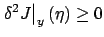
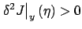

In Section 2.3 we used the first variation to obtain the first-order necessary condition for optimality expressed by the Euler-Lagrange equation. In this section we will work with the second variation and derive first a necessary condition and then a sufficient condition for optimality. The setting is that of the Basic Calculus of Variations Problem and weak minima (cf. the discussion at the beginning of Section 2.3).
Recall from Section 1.3.3 the second-order expansion

. In the present context, the function spaceWe also discussed in Section 1.3.3 that to develop a second-order sufficient condition for a local minimum, we need to assume the first-order necessary condition, strengthen the second-order necessary condition to

, and then try to prove that the second-order term dominates the higher-order term in the expansion (2.56). For the variational problem at hand, we will be able to carry out this program in Section 2.6.2.
Of course, second-order conditions for a local maximum are easily obtained
by reversing the inequalities (or, equivalently, by replacing  with
with  ).
For this reason, we confine our attention to minima.
).
For this reason, we confine our attention to minima.